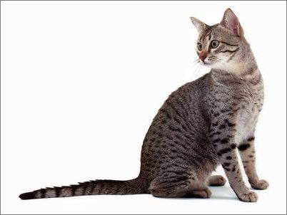

首頁

埃及貓
埃及貓中等頭部帶有圓形感，有一雙大耳朵。臉、四肢和尾巴有條紋，由喉到胸有橫兩條項鍊花紋。古埃及有一名為「巴蒂斯特」，外形如貓的女神，臉上有如埃及貓般的點狀花紋。此貓被認為是古埃及人所飼養的貓。埃及貓是唯一不需人工繁殖形成點狀花樣的貓種。埃及貓被喻為「小型豹」，身上有著大大小小的點狀花紋。至於額頭，在埃及型和英國型有甲蟲圖案，但美國型則為M字。銀色、青銅色和黑灰色是基本毛色，體毛柔滑。